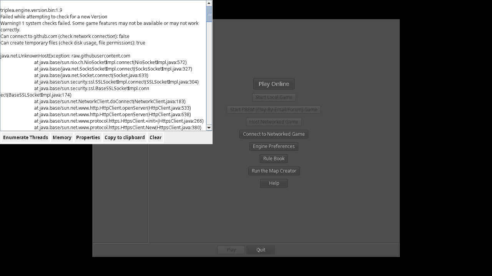

Why it matters
TripleA would be the heavyweight board-war slot, and Dylan already recognised it as a strong needs game files.
A large Axis & Allies-style strategy engine with many maps and scenarios. It is promising, but the VM smoke caught online update/map checks that block clean offline promotion.
These notes are based on actual offline play checks. Opening the page is not enough; we test a real first action before calling it ready.
TripleA would be the heavyweight board-war slot, and Dylan already recognised it as a strong needs game files.
In offline smoke it tried GitHub/raw.githubusercontent.com for updates and map metadata, then left Start Local Game unavailable.
Patch/configure update and map-list behaviour, prove local maps are recognised, then run a full first-turn smoke.
Installers are stored on the arcade's local download shelf. Seed packages: triplea.
220 cached files, 198.1 MB total, with file details and checksums.
Open downloadsOn matching Debian 12 clients, copy the version folder and run sudo apt install ./*.deb. Non-Linux clients need per-game official packages when available.
Open the saved official website, manual, or setup note.
Open guideshttps://triplea-game.org/
Open official page
NOT READY
NOT READY: offline test mode showed TripleA attempting GitHub/raw.githubusercontent.com update/map checks; local map cache was not enough to reach a playable Start Local Game state.
Detailed test notes are kept for operators.
A short offline orientation for first play. Use the docs mirror for deeper rules/manuals where available.
The package launches, but the smoke found online dependency behaviour before real local play.
The World War II Classic map ZIP is cached, but TripleA still needs to recognise local maps offline.
Disable or redirect startup update/map checks for the LAN Arcade environment.
Start a local map, make at least one first-turn action, and capture that under no-internet conditions.
Playable entries must pass an offline play check that reaches a meaningful game state.
Blocked
Not tested
GitHub/map checks found
Patch + first turn